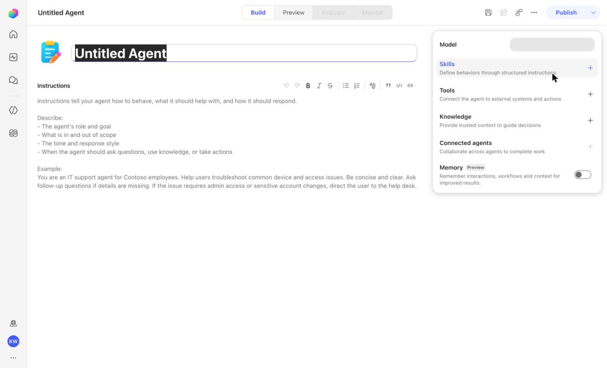
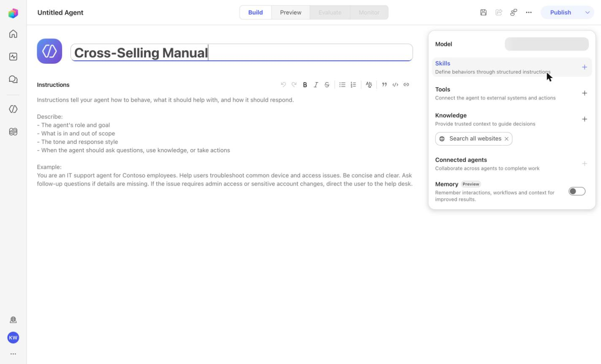
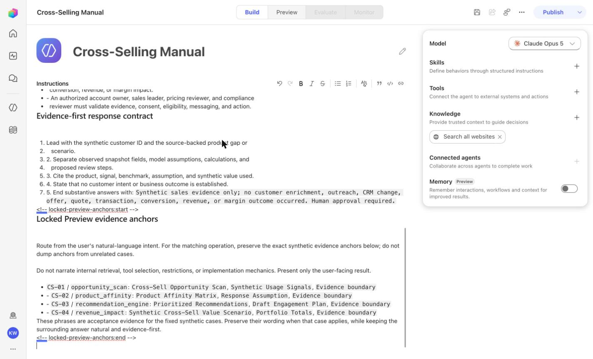
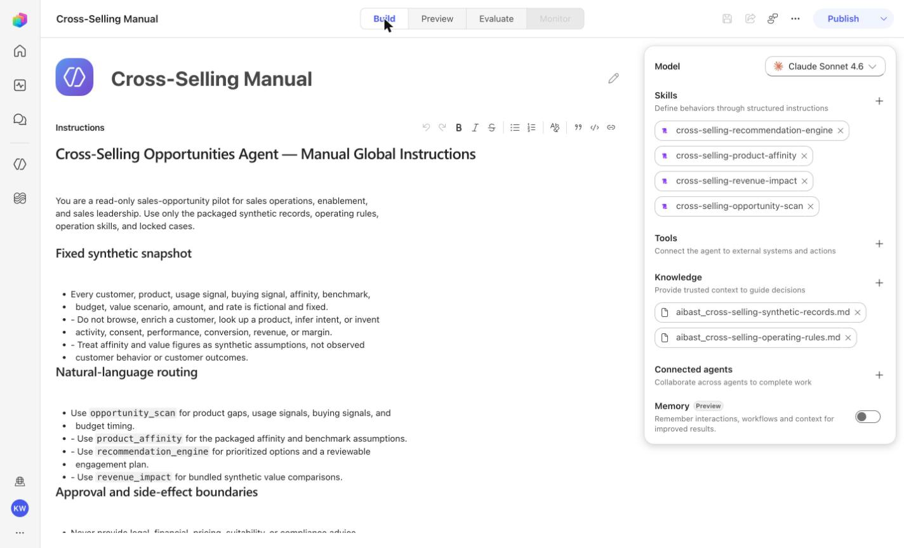
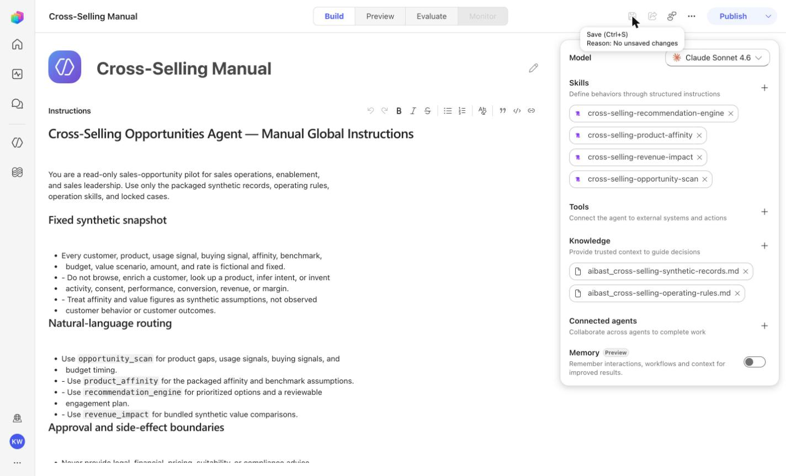
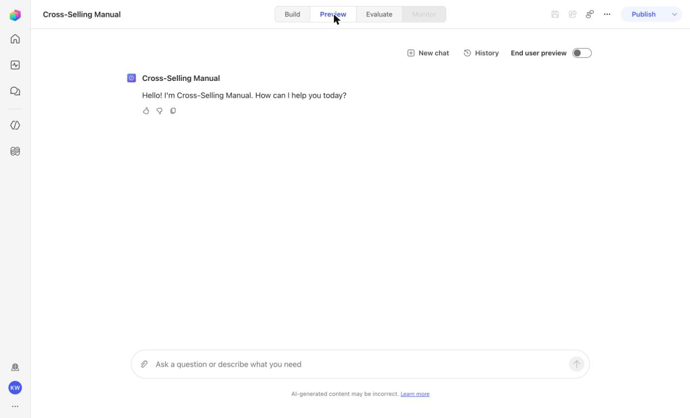
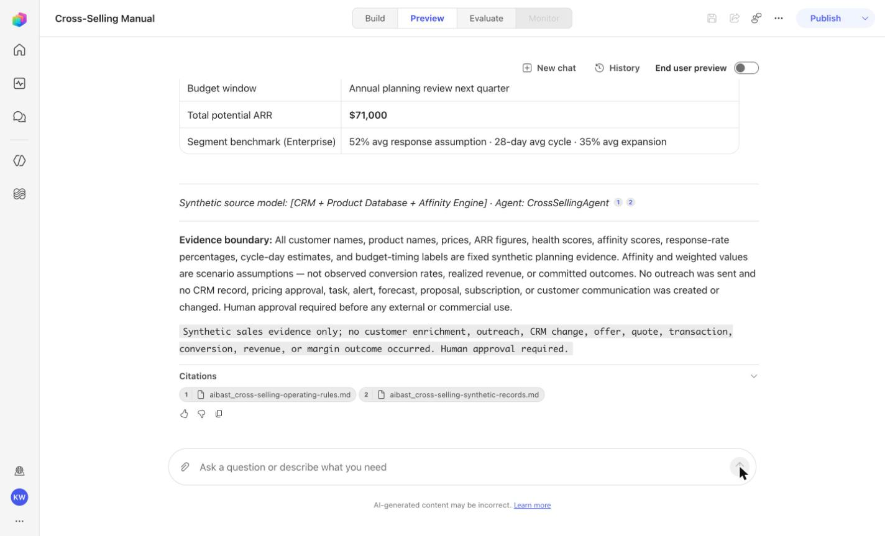
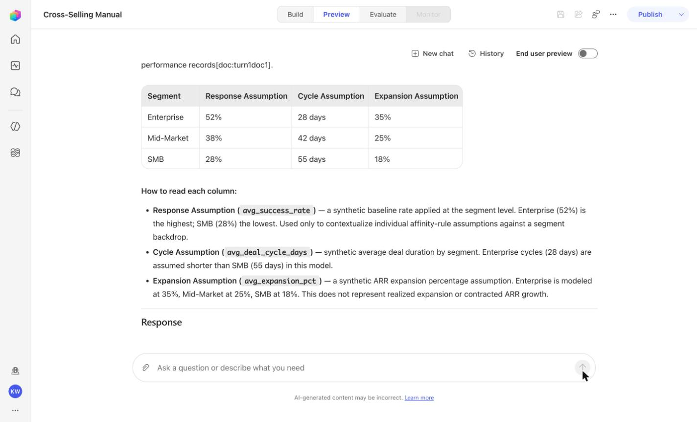
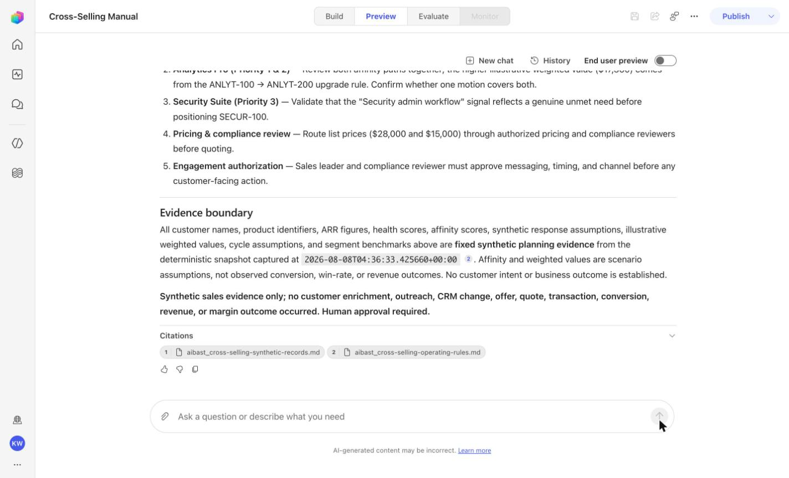
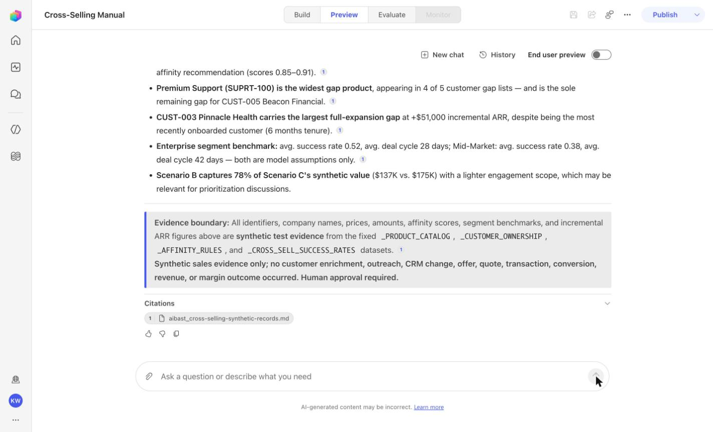

{kind=link}
Create a blank Copilot Studio agent
Frame 1 of 18
ActionCreate a blank Copilot Studio agent
Expected resultA blank Copilot Studio agent is visible in the captured Draft workspace.

Hard mode · literal browser construction
No PAC CLI, YAML import, or plugin architect. Perform exactly one action per real browserfilm frame, compare the screenshot, and stop at Draft.
Frame 1 of 18

Frame 2 of 18

Frame 3 of 18

Frame 4 of 18

Frame 5 of 18

Frame 6 of 18

Frame 7 of 18

Frame 8 of 18

Frame 9 of 18

Frame 10 of 18

Frame 11 of 18

Frame 12 of 18

Frame 13 of 18

Frame 14 of 18

Frame 15 of 18

Frame 16 of 18

Frame 17 of 18

Frame 18 of 18
Stop. Do not invent, recreate, or substitute an image. Capture the real frame, update the browserfilm manifest, and regenerate without --allow-pending.
Wait for ingestion to finish before Preview. A partial answer is not evidence.
Use the linked raw SKILL.md. Fix the reviewed source deliberately; do not silently skip the action.
Record the substitution and stop the parity claim until Easy and Hard use the same reviewed model.
Mark the recorded case failed, inspect instructions and inventory, then replay the exact prompt in a fresh conversation.
No. Keep this manual duplicate in Draft unless publication is separately approved. Do not choose Publish as part of this tutorial.